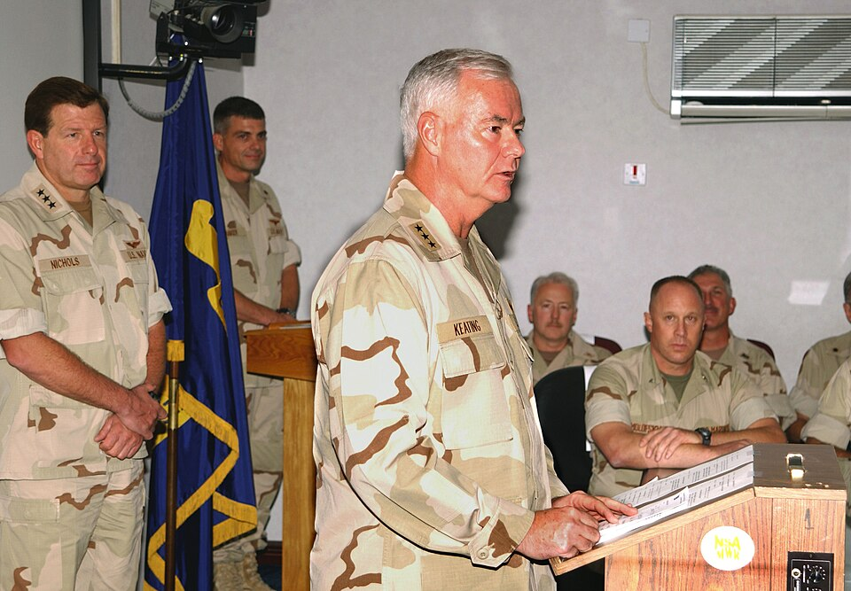

अंतरराष्ट्रीय
 अंतरराष्ट्रीय
अंतरराष्ट्रीयविदेश मंत्री एस. जयशंकर ने नेपाल के प्रधानमंत्री बालेन शाह और नीदरलैंड के विदेश मंत्री से की मुलाकात
विदेश मंत्री एस. जयशंकर ने दिल्ली में नेपाल के प्रधानमंत्री बालेन शाह और नीदरलैंड के विदेश मंत्री टॉम बेरेंडसन से मुलाकात की। बैठकों में व्यापार, ऊर्जा, तकनीक और द्विपक्षीय संबंधों को मजबूत करने पर चर्चा हुई।
 अंतरराष्ट्रीय
अंतरराष्ट्रीयदक्षिण चीन सागर आचार संहिता पर चीन और आसियान के बीच नहीं बनी सहमति
फिलीपींस की अध्यक्षता में हुए शिखर सम्मेलन में दक्षिण चीन सागर के लिए आचार संहिता को अंतिम रूप देने का प्रयास विफल रहा। बाध्यकारी नियमों और भौगोलिक दायरे को लेकर विवाद बना हुआ है।
 अंतरराष्ट्रीय
अंतरराष्ट्रीयभारत दौरे पर आए पाकिस्तानी मंत्री मुसादिक मलिक ने आतंकवाद पर साक्ष्य आधारित चर्चा की वकालत की
एसएससी के एक कार्यक्रम में भारत आए पाकिस्तानी मंत्री मुसादिक मलिक ने आतंकवाद के मुद्दे पर साक्ष्य आधारित और सामूहिक चर्चा की बात कही है। उन्होंने कहा कि आतंकवाद से पूरा क्षेत्र प्रभावित है।
अंतरराष्ट्रीयभारत के न्योते पर द्विपक्षीय बातचीत को तैयार हैं पाक मंत्री मुसादिक मसूद मलिक
पाकिस्तान के मंत्री मुसादिक मसूद मलिक ने कहा है कि आतंकवाद और सिंधु जल संधि जैसे मुद्दों पर भारत के साथ द्विपक्षीय बातचीत के लिए उन्हें अब तक कोई औपचारिक आमंत्रण नहीं मिला है।
 अंतरराष्ट्रीय
अंतरराष्ट्रीयपेरिस में महंगाई के खिलाफ प्रदर्शन हिंसक, पुलिस ने दागे आंसू गैस के गोले
फ्रांस की राजधानी पेरिस में बढ़ती महंगाई के खिलाफ हो रहा प्रदर्शन हिंसक हो गया है। हालात को नियंत्रित करने के लिए पुलिस को आंसू गैस के गोले दागने पड़े।
 अंतरराष्ट्रीय
अंतरराष्ट्रीयव्लादिमीर पुतिन ने की भारत की प्राचीन सभ्यता और भाषाई विविधता की प्रशंसा
रूसी राष्ट्रपति व्लादिमीर पुतिन ने भारत की प्राचीन सभ्यता और भाषाई विविधता की सराहना की है। पीएम मोदी के साथ हुई बातचीत में रक्षा, ऊर्जा और व्यापार समेत विभिन्न मुद्दों पर चर्चा हुई।
 अंतरराष्ट्रीय
अंतरराष्ट्रीयनेपाल के प्रधानमंत्री बालेन शाह आधिकारिक यात्रा पर नई दिल्ली पहुंचे
नेपाल के प्रधानमंत्री बालेन शाह नई दिल्ली पहुंच गए हैं। अपनी इस यात्रा के दौरान दोनों देशों के बीच द्विपक्षीय आर्थिक संबंधों और व्यापार को मजबूत करने पर चर्चा होगी।
अंतरराष्ट्रीयनेपाल के प्रधानमंत्री बालेन्द्र शाह अपनी पहली विदेश यात्रा पर दिल्ली पहुंचे
नेपाल के प्रधानमंत्री बालेन्द्र शाह दो दिवसीय राजकीय यात्रा पर रविवार को नई दिल्ली पहुंचे। मार्च 2026 में पदभार संभालने के बाद यह उनका पहला विदेशी दौरा है, जिसके तहत वे प्रधानमंत्री नरेंद्र मोदी से द्विपक्षीय बातचीत करेंगे।
अंतरराष्ट्रीयनेपाल के प्रधानमंत्री बालेन्द्र शाह दो दिवसीय राजकीय यात्रा पर नई दिल्ली पहुंचे
नेपाल के प्रधानमंत्री बालेन्द्र शाह अपनी पहली द्विपक्षीय विदेश यात्रा पर रविवार को नई दिल्ली पहुंचे। इस दौरान व्यापार, ऊर्जा और कनेक्टिविटी पर चर्चा होगी।
 अंतरराष्ट्रीय
अंतरराष्ट्रीयवेल्स की राजकुमारी कैथरीन ने बीबीसी डॉक्यूमेंट्री में कैंसर से अपने संघर्ष को साझा किया
वेल्स की राजकुमारी कैथरीन ने बीबीसी की आगामी डॉक्यूमेंट्री 'हील' में कैंसर के अपने अनुभव और इस बीमारी से जीवन में आए बदलावों के बारे में खुलकर बात की है।
अंतरराष्ट्रीयएसएस राजामौली की फिल्म 'वाराणसी' 18 फॉर्मेट में होगी रिलीज
एसएस राजामौली की आगामी फिल्म 'वाराणसी' दुनिया भर में 18 अलग-अलग फॉर्मेट में रिलीज होगी। यह फिल्म IMAX 1.43:1 आस्पेक्ट रेशियो में आने वाली पहली गैर-अंग्रेजी फिल्म बताई जा रही है।
अंतरराष्ट्रीयइटली में सोनिया गांधी का पुश्तैनी घर म्यूजियम में बदला, गांधी परिवार को मिला न्योता
इटली में सोनिया गांधी के पुश्तैनी घर को एक म्यूजियम के रूप में विकसित किया गया है। घर के मौजूदा मालिक ने गांधी परिवार को इसे देखने के लिए आमंत्रित किया है।
अंतरराष्ट्रीयबांग्लादेश में राजनीतिक हिंसा तेज, बीएनपी और अवामी लीग समर्थकों में झड़प
बांग्लादेश में बीएनपी और अवामी लीग समर्थकों के बीच भड़की हिंसा के बाद देश भर में बॉर्डर गार्ड बांग्लादेश के 90 प्लाटून तैनात किए गए हैं।
अंतरराष्ट्रीयअमेरिका के न्यूयॉर्क में सड़क हादसे में तेलंगाना के 25 वर्षीय युवक की मौत
अमेरिका के न्यूयॉर्क में सड़क हादसे में तेलंगाना के 25 वर्षीय ई. साई तेजा की मौत हो गई। इंटरस्टेट 90 हाईवे पर उनकी कार एक हिरण से टकरा गई थी, जिसके बाद पीछे से आ रही वैन ने टक्कर मार दी।
 अंतरराष्ट्रीय
अंतरराष्ट्रीयपाकिस्तानी मंत्री मुसादिक मलिक के दिल्ली दौरे और एससीओ भाषण की वहां के मीडिया में चर्चा
शंघाई सहयोग संगठन के सम्मेलन में हिस्सा लेने नई दिल्ली आए पाकिस्तानी मंत्री मुसादिक मलिक के भाषण और दौरे को वहां के मीडिया में प्रमुखता से जगह दी गई है।
अंतरराष्ट्रीयनेपाल के प्रधानमंत्री बालेंद्र शाह दो दिवसीय भारत दौरे पर नई दिल्ली पहुंचे
नेपाल के प्रधानमंत्री बालेंद्र शाह प्रधानमंत्री नरेंद्र मोदी के निमंत्रण पर दो दिवसीय आधिकारिक यात्रा पर रविवार को नई दिल्ली पहुंचे। वह विदेश मंत्री से मिले और सोमवार को प्रधानमंत्री मोदी से बातचीत करेंगे।
अंतरराष्ट्रीयअमेरिका के सिएटल एयरपोर्ट पर आईसीई अधिकारियों ने दो यात्रियों को हिरासत में लिया
अमेरिका के सिएटल-टाकोमा अंतरराष्ट्रीय हवाई अड्डे पर इमीग्रेशन अधिकारियों ने बोर्डिंग के दौरान दो लोगों को हिरासत में लिया। इस दौरान उड़ान में भी देरी हुई।
 अंतरराष्ट्रीय
अंतरराष्ट्रीयशेनझेन में ट्रंप, पुतिन और शी जिनपिंग की बैठक से क्या बदलेंगे वैश्विक समीकरण
अमेरिका, रूस और चीन के शीर्ष नेताओं की शेनझेन में हुई बैठक के बाद दुनिया की बड़ी ताक़तों के नए समीकरण और भारत जैसे देशों की भूमिका को लेकर चर्चा तेज़ हो गई है।
अंतरराष्ट्रीयईरान के रिवोल्यूशनरी गार्ड ने बहरीन में अमेरिकी रडार को बनाया निशाना
ईरान के रिवोल्यूशनरी गार्ड कॉर्प्स (IRGC) ने बहरीन में दो अमेरिकी पैट्रियट एयर डिफेंस रडार पर मिसाइल और ड्रोन से हमला करने का दावा किया है।
 अंतरराष्ट्रीय
अंतरराष्ट्रीयइजरायल के पूर्व पीएम नफ्ताली बेनेट ने नेतन्याहू के नेतृत्व में काम करने से किया इनकार
इजरायल के पूर्व प्रधानमंत्री नफ्ताली बेनेट ने गादी आइजेनकोट के नेतृत्व में सरकार बनाने का समर्थन किया है। उन्होंने बेंजामिन नेतन्याहू या उनके गुट के साथ काम करने की संभावना को खारिज कर दिया है।
अंतरराष्ट्रीयSCO सम्मेलन में बोले पाकिस्तानी मंत्री मलिक, सभ्यताओं के मिलन से बनी है दिल्ली
दिल्ली में आयोजित एससीओ सभ्यतागत संवाद मंच में पाकिस्तानी मंत्री मुसादिक मलिक ने हुमायूं और शेरशाह सूरी का जिक्र किया। उन्होंने कहा कि साझा संस्कृति और संवाद से ही पूरे क्षेत्र को आगे बढ़ाने में मदद मिल सकती है।
अंतरराष्ट्रीयनेपाल के प्रधानमंत्री बालेन शाह आज नई दिल्ली पहुंचेंगे, द्विपक्षीय वार्ताओं पर रहेगी नजर
नेपाल के प्रधानमंत्री बालेन शाह आज आधिकारिक यात्रा पर नई दिल्ली पहुंच रहे हैं। माना जा रहा है कि दोनों देशों के बीच कई अहम मुद्दों पर पहले ही सहमति बन चुकी है, जिसकी घोषणा इस दौरे पर हो सकती है।
अंतरराष्ट्रीयनेपाल के प्रधानमंत्री बालेंद्र शाह आज से दो दिवसीय आधिकारिक भारत दौरे पर
नेपाल के प्रधानमंत्री बालेंद्र शाह रविवार से दो दिन की आधिकारिक यात्रा पर भारत आ रहे हैं। पदभार संभालने के बाद यह उनकी पहली विदेश यात्रा है, जिसमें उनके साथ 34 सदस्यीय प्रतिनिधिमंडल भी आ रहा है।
अंतरराष्ट्रीयअमेरिका में सड़क हादसे में तेलंगाना के युवक की मौत, एक सप्ताह पहले लगी थी नौकरी
अमेरिका में एक सड़क हादसे में तेलंगाना के एक युवक की मौत हो गई है। राज्य के मंत्री कोमाटिरेड्डी वेंकट रेड्डी ने इस घटना पर दुख जताया है और बताया कि युवक को एक सप्ताह पहले ही नौकरी मिली थी।

अंतरराष्ट्रीयअमेरिका ने ईरान के एफ-16 विमान गिराने के दावे को किया खारिज
ईरान ने फारस की खाड़ी के ऊपर अमेरिकी एफ-16 लड़ाकू विमान को मार गिराने का दावा किया था, जिसे अमेरिकी सेंट्रल कमांड ने पूरी तरह झूठा करार दिया है।
अंतरराष्ट्रीयऑपरेशन सिंदूर में पाकिस्तान को चीन के समर्थन का अमेरिकी रिपोर्ट में खुलासा
एक अमेरिकी पैनल की रिपोर्ट में खुलासा हुआ है कि चीन ने ऑपरेशन सिंदूर के दौरान पाकिस्तान का साथ क्यों दिया था। रिपोर्ट में भारत और अमेरिका के बीच रणनीतिक साझेदारी बढ़ाने की सिफारिश भी की गई है।
 अंतरराष्ट्रीय
अंतरराष्ट्रीयअमेरिका के राष्ट्रपति डोनाल्ड ट्रंप बोले, ईरान के साथ समझौता स्थायी होना चाहिए
अमेरिकी राष्ट्रपति डोनाल्ड ट्रंप ने कहा है कि ईरान के साथ होने वाला कोई भी संभावित समझौता स्थायी होना चाहिए, ताकि तेहरान को परमाणु हथियार हासिल करने से रोका जा सके।
अंतरराष्ट्रीयरूस ने जेलेंस्की के गृह नगर क्रिवी रीह पर किए बैलिस्टिक मिसाइल हमले, दो की मौत
रूस ने यूक्रेन के राष्ट्रपति वोलोडिमिर जेलेंस्की के गृह नगर क्रिवी रीह पर बैलिस्टिक मिसाइल से हमले किए, जिसमें एक बच्चे समेत दो लोगों की मौत हो गई और 60 से अधिक घायल हो गए।
 अंतरराष्ट्रीय
अंतरराष्ट्रीयसोनिया गांधी का इटली स्थित बचपन का घर बनेगा म्यूजियम, खरीदार का एलान
वर्ष 2020 में सोनिया गांधी का इटली स्थित बचपन का घर खरीदने वाले सिख कारोबारी सुखदेव सिंह कांग ने इसे म्यूजियम में बदलने की योजना बनाई है। उन्होंने गांधी परिवार से पुरानी यादें और दस्तावेज साझा करने की अपील की है।
अंतरराष्ट्रीयखाड़ी क्षेत्र में अमेरिकी F-16 विमान पर हमले का ईरान का दावा, अमेरिका ने नकारा
ईरान ने खाड़ी क्षेत्र में अमेरिकी F-16 फाइटर जेट को मिसाइल से निशाना बनाने का दावा किया है। वहीं, अमेरिकी सेंट्रल कमांड (CENTCOM) ने इस दावे को पूरी तरह खारिज कर दिया है।
अंतरराष्ट्रीयकनाडा में गोलीबारी में दो भारतीय मूल के युवाओं की मौत, संगठित अपराध से जुड़े होने का संदेह
कनाडा के एक स्टोर के बाहर हुई गोलीबारी में दो भारतीय मूल के नागरिकों की मौत हो गई। पुलिस ने इसे लक्षित हमला बताते हुए संगठित अपराध से जुड़े होने की आशंका जताई है।
अंतरराष्ट्रीयअमेरिका को ईरान के रिवोल्यूशनरी गार्ड प्रमुख की चेतावनी, कहा- दुश्मन होंगे अपमानित
ईरान के रिवोल्यूशनरी गार्ड कॉर्प्स के प्रमुख ने अमेरिका और उसके सहयोगियों को चेतावनी दी है। उन्होंने भूमिगत 'मिसाइल सिटी' के दौरे के दौरान कहा कि सैन्य टकराव अभी खत्म नहीं हुआ है।
अंतरराष्ट्रीयअमेरिका से मिली सूचना के बाद मेक्सिको में सैन्य कार्रवाई, ड्रग कार्टेल सरगना गिरफ्तार
एफबीआई के सबसे वांछित अपराधियों में शामिल और बेल्ट्रान लेयवा कार्टेल के प्रमुख नेता अल चापो को अमेरिकी खुफिया जानकारी के आधार पर मेक्सिको में एक रात चले सैन्य अभियान के बाद गिरफ्तार कर लिया गया है।
अंतरराष्ट्रीयअमेरिका और उसके सहयोगियों को और अधिक अपमान का सामना करना पड़ेगा: ईरान
ईरान के रिवोल्यूशनरी गार्ड्स (IRGC) के प्रमुख अहमद वाहिदी ने अमेरिका को चेतावनी दी है कि चल रहे सैन्य घटनाक्रम अभी शुरुआत हैं और उसके दुश्मनों को और अधिक अपमान झेलना होगा।
अंतरराष्ट्रीयअमेरिका की रिपोर्ट में दावा, भारत के बढ़ते प्रभाव को रोकने के लिए पाकिस्तान की मदद कर रहा है चीन
एक अमेरिकी रिपोर्ट में कहा गया है कि चीन भारत के बढ़ते रणनीतिक प्रभाव को संतुलित करने के लिए पाकिस्तान का सैन्य समर्थन कर रहा है, जिससे भारत के लिए दो मोर्चों पर युद्ध का खतरा बढ़ गया है।
 अंतरराष्ट्रीय
अंतरराष्ट्रीयसंयुक्त राष्ट्र में AI किलर रोबोट पर रोक के प्रस्ताव पर दो देशों की असहमति
संयुक्त राष्ट्र में स्वायत्त हथियारों और AI किलर रोबोट के इस्तेमाल पर रोक लगाने के प्रस्ताव पर चर्चा के दौरान दो देशों ने असहमति जताई, जबकि 128 देशों ने इसका समर्थन किया।
 अंतरराष्ट्रीय
अंतरराष्ट्रीयअमेरिका: दक्षिणी कैलिफोर्निया में मालगाड़ियों से 208 करोड़ की चोरी, 14 आरोपी
अमेरिका के दक्षिणी कैलिफोर्निया में मालगाड़ियों से करीब 208 करोड़ रुपये का सामान चोरी करने के मामले में अमेरिकी न्याय विभाग ने 14 लोगों पर केस दर्ज किया है।
अंतरराष्ट्रीयदादा साहब फाल्के अंतरराष्ट्रीय फिल्म फेस्टिवल 2026: 'धुरंधर' और 'सैय्यारा' का जलवा
दादा साहब फाल्के अंतरराष्ट्रीय फिल्म फेस्टिवल 2026 के विजेताओं की घोषणा कर दी गई है। फिल्म 'धुरंधर' और 'सैय्यारा' ने सबसे ज्यादा पुरस्कार जीते हैं।
अंतरराष्ट्रीयगुरपतवंत सिंह पन्नू हत्या साजिश मामला: निखिल गुप्ता को अमेरिका में 19 साल से अधिक की सजा
अमेरिकी अदालत ने खालिस्तानी अलगाववादी गुरपतवंत सिंह पन्नू की हत्या की साजिश से जुड़े मामले में भारतीय नागरिक निखिल गुप्ता को करीब 19 साल 7 महीने की सजा सुनाई है।
अंतरराष्ट्रीयपुतिन, ट्रंप और जिनपिंग की शेनझेन बैठक को रूस ने बताया ऐतिहासिक
रूस ने पुतिन, ट्रंप और जिनपिंग की त्रिपक्षीय बैठक को वैश्विक राजनीति में बदलाव का संकेत बताया है। हालांकि, इस बीच यूक्रेन पर रूसी हमले जारी हैं और शांति दावों पर सवाल उठ रहे हैं।
अंतरराष्ट्रीयपश्चिम एशिया तनाव: ईरान का अमेरिकी F-16 विमान पर हमले का दावा, अमेरिका ने किया खंडन
ईरान ने फारस की खाड़ी के ऊपर अमेरिकी एफ-16 लड़ाकू विमान को मिसाइल से निशाना बनाने का दावा किया है। वहीं, अमेरिका के सेंटकॉम ने इस दावे को खारिज करते हुए कहा है कि सभी विमान सुरक्षित हैं।
 अंतरराष्ट्रीय
अंतरराष्ट्रीयपाकिस्तानी मंत्री के भारत दौरे पर कांग्रेस का विरोध, सरकार ने दी सफाई
पाकिस्तान के जलवायु परिवर्तन मंत्री मुसादिक मलिक के दिल्ली दौरे पर कांग्रेस ने सरकार को घेरा है। विदेश मंत्रालय ने स्पष्ट किया है कि यह शंघाई सहयोग संगठन का बहुपक्षीय मंच है।
अंतरराष्ट्रीयफ्रांस की अदालत ने अश्वेत व्यक्ति से नस्लीय हिंसा करने वाले तीन पुलिसकर्मियों को सुनाई जेल
पेरिस की एक अदालत ने छह साल पुराने मामले में अश्वेत संगीत निर्माता मिशेल जेलेर से नस्लीय हिंसा और मारपीट करने वाले तीन पुलिसकर्मियों को एक से दो साल तक की जेल की सजा सुनाई है।
अंतरराष्ट्रीयअमेरिका-ईरान जंग के नौ महीने बाद भी दुनिया में नहीं बढ़ा खाने का संकट
अमेरिका-ईरान संघर्ष और खराब मौसम के बावजूद दुनिया भर में खाने-पीने की चीजों के दाम नियंत्रण में हैं। भरे हुए गोदामों और पर्याप्त स्टॉक के कारण वैश्विक स्तर पर अनाज संकट की आशंकाएं गलत साबित हुई हैं।
अंतरराष्ट्रीयपैंक्रियाटिक कैंसर के इलाज में मिली बड़ी कामयाबी, नई दवा से ट्यूमर नियंत्रित
पैंक्रियाटिक कैंसर के शुरुआती परीक्षण में कीमोथेरेपी के साथ नई दवा देने से कुछ मरीजों के ट्यूमर स्कैन में गायब दिखे। विशेषज्ञों ने इसे दशकों में सबसे बड़ी प्रगति बताया है।
 अंतरराष्ट्रीय
अंतरराष्ट्रीयअमेरिकी राष्ट्रपति ट्रंप ने एनवीडिया के पूर्व सीईओ जेन्सेन हुआंग का किया समर्थन
अमेरिकी राष्ट्रपति डोनाल्ड ट्रंप ने एनवीडिया के पूर्व सीईओ जेन्सेन हुआंग का समर्थन करते हुए उन्हें एक और मौका देने की वकालत की है। हालांकि, कंपनी के बोर्ड ने फिलहाल उनकी वापसी से इनकार किया है।
अंतरराष्ट्रीयशेनझेन में ट्रंप और शी जिनपिंग ने साथ देखी ‘Y.M.C.A.’ गाने की प्रस्तुति
चीन के शेनझेन में एक भोज के दौरान अमेरिकी राष्ट्रपति डोनाल्ड ट्रंप और चीनी राष्ट्रपति शी जिनपिंग ने ‘Y.M.C.A.’ गाने की प्रस्तुति साथ बैठकर देखी।
 अंतरराष्ट्रीय
अंतरराष्ट्रीयनेपाल के प्रधानमंत्री बालेन शाह दो दिवसीय आधिकारिक दौरे पर रविवार को पहुंचेंगे दिल्ली
नेपाल के प्रधानमंत्री बालेन शाह पद संभालने के बाद अपनी पहली विदेश यात्रा पर रविवार को दिल्ली पहुंच रहे हैं। इस दौरान प्रधानमंत्री नरेंद्र मोदी और अन्य वरिष्ठ अधिकारियों के साथ द्विपक्षीय बैठकों में कई अहम मुद्दों पर चर्चा होगी।
अंतरराष्ट्रीयपोलैंड के हवाई क्षेत्र में गिरी रूसी मिसाइल, सैन्य अभ्यास के दौरान हुई घटना
पोलैंड में एक रूसी मिसाइल गिरने की घटना सामने आई है। प्रधानमंत्री डोनाल्ड टस्क के अनुसार, यह घटना तब हुई जब पश्चिमी देशों की सेनाएं इलाके में सैन्य अभ्यास कर रही थीं।
अंतरराष्ट्रीयपेरू में 6.8 तीव्रता का तेज़ भूकंप, लीमा में घरों से बाहर निकले लोग
मध्य पेरू में 6.8 तीव्रता का भूकंप आने से राजधानी लीमा में दहशत फैल गई और लोग सड़कों पर आ गए। संसद भवन को भी एहतियातन खाली कराया गया।
अंतरराष्ट्रीयसिंधु जल संधि पर भारत का रुख स्पष्ट, विदेश मंत्रालय ने कहा- कोई बदलाव नहीं
भारत ने स्पष्ट किया है कि सिंधु जल संधि को लेकर उसका रुख पूरी तरह साफ है और इसमें कोई बदलाव नहीं आया है। यह बयान पाकिस्तानी मंत्री मुसादिक मलिक के दिल्ली दौरे के बीच आया है।
अंतरराष्ट्रीयअमेरिका में निखिल गुप्ता को पन्नू हत्या की साज़िश में 19 साल की सज़ा
американ फेडरल कोर्ट ने सिख अलगाववादी गुरपतवंत सिंह पन्नू की हत्या की साज़िश रचने के मामले में भारतीय नागरिक निखिल गुप्ता को 19 साल से अधिक की सज़ा सुनाई है।
अंतरराष्ट्रीयहोर्मुज जलडमरूमध्य में तेल टैंकर पर हमला, ईरान का अमेरिकी ड्रोन गिराने का दावा
ओमान के पास होर्मुज जलडमरूमध्य में एक तेल टैंकर के इंजन कक्ष में अज्ञात चीज से टक्कर की सूचना है। इसी बीच ईरान ने एक अमेरिकी ड्रोन को मार गिराने का दावा किया है, जिससे क्षेत्र में तनाव बढ़ गया है।